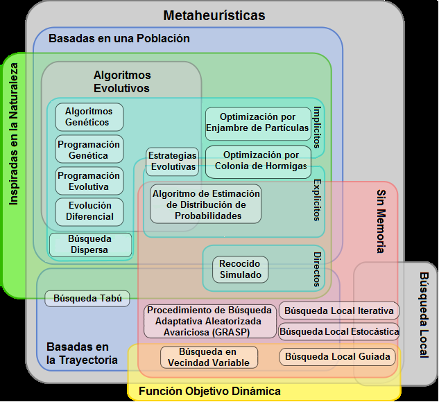
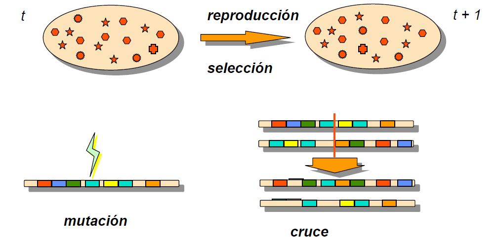
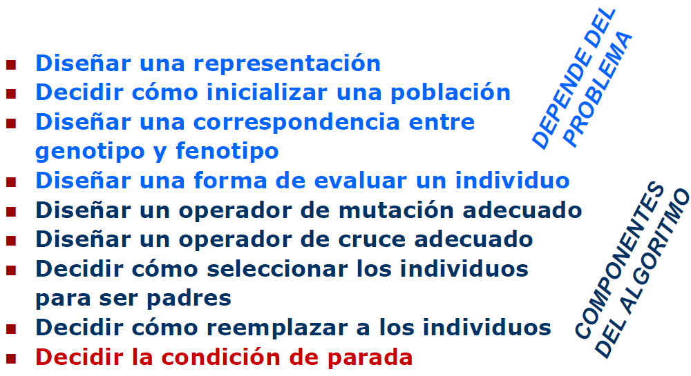
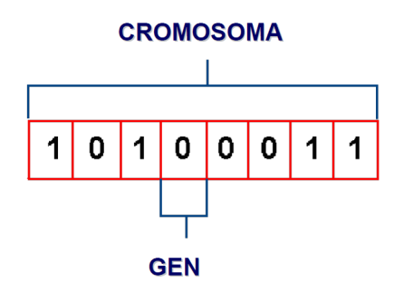
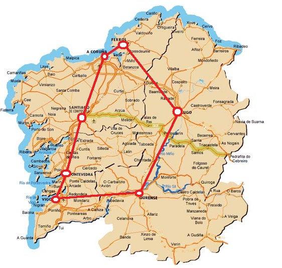
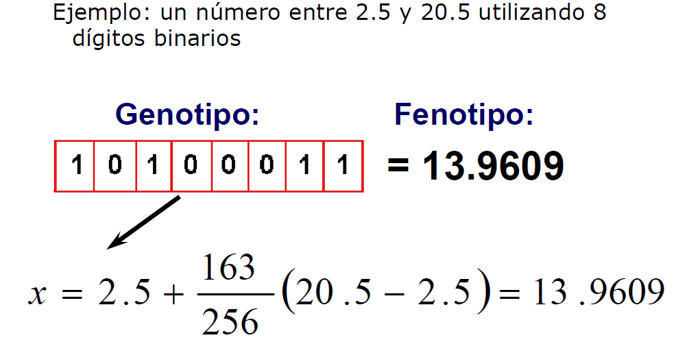
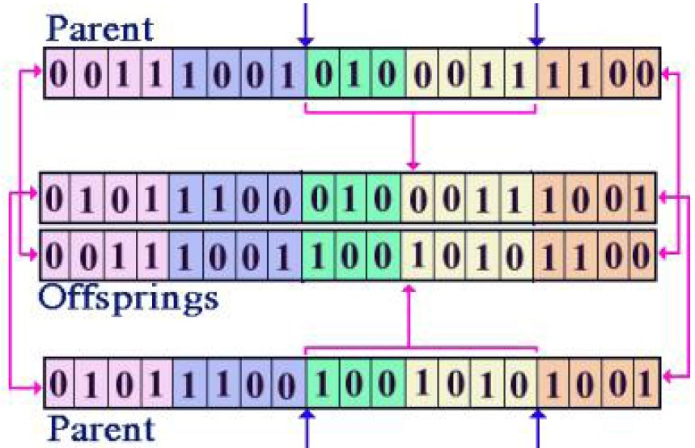

Metaheurísticas basadas en poblaciones
Temas de SISIN · 2/2
- 1. Búsqueda local, Temple Simulado y CSP
- 2. Metaheurísticas basadas en poblaciones
2.1 Metaheurísticas basadas en poblaciones
En el tema 1 las metaheurísticas (MH) trabajaban con una sola solución que se iba moviendo por el espacio de búsqueda (búsqueda local, temple simulado, tabú). Este tema pasa a las MH basadas en poblaciones: en vez de una solución, se mantiene un conjunto de soluciones que evoluciona a la vez. El tema incluye la computación bioinspirada, los algoritmos genéticos, las colonias de hormigas (ACO, Ant Colony Optimization), los enjambres de partículas (PSO, Particle Swarm Optimization) y la programación genética; esta parte desarrolla la computación evolutiva y los algoritmos genéticos.
Las MH se clasifican en tres familias. Los métodos constructivos (GRASP, ACO) construyen la solución pieza a pieza. Los de búsqueda o trayectorias recorren el espacio de soluciones mediante una transformación iterativa de una solución de partida (búsqueda local: enfriamiento simulado, búsqueda tabú…). Y los de poblaciones hacen evolucionar conjuntos de soluciones, habitualmente con procedimientos aleatorios (computación evolutiva, PSO…). Las diapositivas recogen también la taxonomía de Duarte (2004), que separa las MH según si están inspiradas en la naturaleza, si usan memoria y si se basan en trayectoria o en población.

Analogía
Una MH de trayectoria es un único montañero buscando la cumbre en la niebla: si sube a un pico local, se queda ahí. Una MH de población es un grupo de montañeros repartidos por la sierra que se comunican: los que están más alto atraen al resto, y es mucho menos probable que todos se queden atascados en el mismo pico pequeño.

Para entenderlo mejor
Metaheurística (Wikipedia) — clasificación general de las metaheurísticas (artículo; enlazado en las diapositivas).
2.2 Computación evolutiva
La computación evolutiva (CE) usa modelos computacionales de los procesos evolutivos (Holland, 1975): incorpora los mecanismos naturales de selección y supervivencia para resolver problemas de IA que la naturaleza ya había "resuelto" muy eficientemente. Son métodos "débiles": no requieren conocimiento específico del problema. Sus variantes son las estrategias de evolución (Rechenberg, 1973), la programación evolutiva (Fogel y otros, 1966), la programación genética (Koza) y los algoritmos genéticos (Goldberg, 1989), entre otras.
La metáfora biológica es común a todas: en una población de individuos con recursos limitados, la competencia produce selección natural y sobreviven los que mejor se adaptan al medio. La evolución es la mejora de la adaptación de la población al medio.
En computación, la CE está formada por modelos de evolución de poblaciones de elementos que representan soluciones a un problema. Simular la evolución de esa población da una técnica de optimización probabilística. Es una metaheurística: un procedimiento general que se parametriza para cada problema y que conduce, de forma eficiente, a soluciones subóptimas (buenas, pero sin garantía de ser la mejor).

2.2.1 La estrategia evolutiva
En un problema de optimización, la calidad de cada solución (su fitness o adaptación al medio) se mide con la función objetivo o de coste. La estrategia es:
- Generar un conjunto aleatorio de soluciones: la población inicial.
- Evaluar el fitness de cada solución.
- Seleccionar a los mejores como base de la siguiente generación y aplicarles los operadores de variación: la recombinación (cruce) aplicada a dos "padres" produce "hijos", y la mutación aplicada a un individuo produce otro nuevo.
- Evaluar el fitness de la descendencia. Los hijos compiten con la población anterior para formar parte de la nueva generación (reemplazo).
- Iterar hasta encontrar un candidato de calidad suficiente o llegar a un límite.
Hay dos fuerzas que tiran en sentidos contrarios. Los operadores de variación (cruce y mutación) introducen diversidad; la selección aumenta la calidad media de la población. Combinadas, el fitness mejora generación tras generación.

La MH es aleatoria por varios motivos: la selección da cierta probabilidad a individuos de fitness bajo (igual que el SA o la búsqueda tabú aceptan a veces soluciones peores), la recombinación elige al azar los fragmentos que se combinan, y la mutación elige al azar el fragmento que cambia.
Analogía
Es la cría de caballos de carreras. Empiezas con caballos variados (población), mides lo rápido que corren (fitness), cruzas preferentemente a los más rápidos (selección + cruce), de vez en cuando nace uno con algún rasgo nuevo (mutación), y los potros compiten por un sitio en la cuadra (reemplazo). Generación tras generación, la cuadra es más rápida.
Para entenderlo mejor
Algoritmos genéticos (UPV) — el ciclo completo de un algoritmo genético con un ejemplo, de la Universitat Politècnica de València (vídeo, 9:40).
2.2.2 Ejemplo: 8-reinas con un algoritmo genético
En el ejemplo de Russell y Norvig, cada individuo es una cadena de 8 dígitos (la fila de la reina en cada columna) y el fitness es el número de pares de reinas que no se atacan (28 = solución). La población inicial (24748552, 32752411, 24415124, 32543213) tiene fitness 24, 23, 20 y 11; las probabilidades de selección son proporcionales (31 %, 29 %, 26 %, 14 %). Se seleccionan parejas, se cruzan cortando por un punto aleatorio y se mutan algunos dígitos.

2.2.3 Tipos de algoritmos evolutivos
Todos comparten la estrategia general y se diferencian en los operadores y en cómo incorporan las nuevas soluciones a la población. Los algoritmos genéticos representan soluciones de n variables; la programación genética, soluciones en forma de árboles (programas). Las soluciones candidatas pueden tener codificación numérica entera o real; por ejemplo, cruzar (2.1, −0.3, 4.6) y (9.1, 0.2, 7.2) intercambiando las dos últimas componentes da (2.1, 0.2, 7.2) y (9.1, −0.3, 4.6).
2.3 Componentes de un algoritmo evolutivo
Los AE siguen un esquema de generar y probar: la función de fitness es una estimación heurística de la calidad de cada solución, y la búsqueda la dirigen los operadores de variación y selección. Diseñar un AE es decidir sus seis componentes:
- Representación de los individuos (y cómo inicializar la población).
- Función de fitness (cómo evaluar un individuo).
- Población (tamaño, inicialización).
- Mecanismo de selección de padres.
- Operadores de variación: cruce y mutación.
- Mecanismo de reemplazo generacional.
Además hay que fijar la condición de parada. Los componentes que dependen del problema son la representación, la correspondencia genotipo–fenotipo y la evaluación; el resto son componentes del algoritmo.

2.3.1 Representación
Representar es modelar la solución real en forma de individuo del AE: codificar la solución (fenotipo) como una cadena de genes (genotipo). Una vez elegida la representación, los operadores deben ser compatibles con ella. El vocabulario es biológico:
| Término | Significado |
|---|---|
| Cromosoma o genotipo | Vector que codifica la solución |
| Gen | Elemento mínimo del cromosoma (un atributo) |
| Alelo | Valor que toma cada gen |
| Fenotipo | La solución real que representa el cromosoma |

En el problema del viajante (TSP, recorrer todas las ciudades una vez con la distancia mínima), el genotipo es la secuencia de ciudades y el fenotipo, la ruta.

Hay varias codificaciones:
- Binaria: cada individuo es una secuencia de bits y cada gen es un bit; cómo se interpreta cada alelo depende de la aplicación. Por ejemplo, el genotipo 10100011 puede representar el entero
, o un real entre 2,5 y 20,5 con 8 bits: . - Real: cada individuo es una secuencia de números reales. El fenotipo no tiene por qué coincidir con el genotipo: con el genotipo (22, 5, 7), el fenotipo puede ser el propio vector o, por ejemplo, su suma (34).
- De orden: cada individuo es una permutación (como en el TSP). Necesita operadores especiales con reparación para que el resultado de cruzar o mutar siga siendo una permutación.

El paso de genotipo a fenotipo a veces es obvio (TSP), pero otras es complejo: el genotipo puede ser el conjunto de parámetros de entrada de otro algoritmo que obtiene la solución final (una simulación numérica, una visualización 3D, un sistema basado en reglas…).

2.3.2 Población
La población representa las posibles soluciones y es la unidad de la evolución (lo que evoluciona es la población, no cada individuo). Importa su diversidad: cuántas soluciones distintas contiene. La inicialización puede ser aleatoria (uniforme en el rango de cada parámetro, para repartir las soluciones por todo el espacio: en binario cada bit 0 o 1 con p = 0,5; en real, uniforme en [a, b]), heurística o una combinación de ambas.
2.3.3 Función de calidad (fitness)
Representa los requisitos a los que debe adaptarse la población y cuantifica su mejora. Es la etapa más costosa: hasta el 95 % de la CPU, porque se evalúa cada individuo de cada generación. Puede ser una función simple (un número real), un procedimiento, un simulador o incluso un proceso externo (experimentos). A veces es un vector, ordenable o no. En los problemas típicos de optimización es la función objetivo; si hay varios objetivos, se agregan en una solución de compromiso (media ponderada, máximo, mínimo…).
2.3.4 Selección
La selección distingue a los individuos según su calidad. Los elegidos son los padres, que formarán la descendencia (offspring, candidatos a entrar en la nueva generación). Es probabilística: los mejores tienen más probabilidad, pero los peores también tienen opciones, lo que mantiene la diversidad y evita quedarse atrapado en un óptimo local (local trapping). La presión selectiva mide hasta qué punto el proceso está dirigido por los mejores individuos.
| Método | Cómo elige |
|---|---|
| Aleatoria | Al azar, sin mirar el fitness |
| Torneo | Se escogen k individuos al azar y gana el mejor (binario k = 2, ternario k = 3) |
| Orden lineal (ranking) | Se ordena la población por fitness y la probabilidad depende de la posición |
| Ruleta | Probabilidad proporcional al fitness |

Analogía
La ruleta es una rifa en la que cada individuo compra tantas papeletas como fitness tiene: el mejor tiene más papeletas, pero cualquiera puede ganar. El torneo es un "mejor de k": sacas k al azar y pasa el ganador, así que cuanto mayor es k, más difícil lo tienen los débiles (más presión selectiva).
Para entenderlo mejor
Selección por ruleta en algoritmos genéticos — cómo se calculan las probabilidades y se gira la ruleta, paso a paso (vídeo, 11:33).
2.3.5 Cruce
El cruce mezcla los genotipos de dos padres. Debe diseñarse de acuerdo con la representación para dar individuos válidos. Se aplica con probabilidad alta,
En binario, el más simple es el cruce de un punto: se corta a los dos padres por el mismo punto aleatorio y se intercambian las colas. Con 1111111 y 0000000 cortados tras el tercer gen salen 1110000 y 0001111. El cruce de dos puntos intercambia el segmento central.


En la representación de orden un cruce normal produciría ciudades repetidas, así que se usan cruces con reparación:
OX (order crossover): se copia un segmento aleatorio del padre 1 en el hijo y se completa con el resto de alelos en el orden en que aparecen en el padre 2, empezando tras el segundo punto de corte. Con P1 = (1 2 3 | 4 5 6 7 | 8 9) y P2 = (9 3 7 | 8 2 6 5 | 1 4): se copia 4 5 6 7; el padre 2 leído desde el segundo corte es 1 4 9 3 7 8 2 6 5; quitando los ya usados queda 1 9 3 8 2, que se coloca a partir del segundo corte (y da la vuelta): H1 = (3 8 2 4 5 6 7 1 9).
PMX (partially mapped crossover): se elige una subcadena central y se establece una correspondencia por posición entre los valores de ambas. Cada hijo recibe la subcadena central de un padre y el mayor número posible de valores del otro en sus posiciones; si un valor ya está, se sigue la correspondencia. Con P1 = (1 2 3 | 4 5 6 7 | 8 9) y P2 = (4 5 3 | 1 8 7 6 | 9 2), las correspondencias son 1↔4, 8↔5, 7↔6, 6↔7. El hijo 1 toma el centro de P2 (1 8 7 6) y el resto de P1: el 1 ya está, así que pasa a 4; el 8 ya está, pasa a 5 → H1 = (4 2 3 | 1 8 7 6 | 5 9). Análogamente, H2 = (1 8 3 | 4 5 6 7 | 9 2).
CX (cycle crossover): cada valor del hijo conserva la posición que tenía en uno de los padres. Partiendo de un valor
En representación real:
- Cruce aritmético: combinación convexa con un parámetro α. Con (22, 10, 4), (12, 6, 9) y α = 0,1:
y . - Cruce plano: cada gen del hijo se toma con distribución uniforme en el intervalo que forman los padres:
, , .
Analogía
El cruce es como combinar dos recetas buenas: la base de una y la salsa de otra. En el TSP no vale "cortar y pegar" sin más, porque saldría una ruta que visita Lugo dos veces y se salta Vigo; OX, PMX y CX son formas de mezclar las rutas reparando las repeticiones.
2.3.6 Mutación
Es una operación unaria sobre un genotipo que produce un descendiente ligeramente modificado. Debe permitir alcanzar cualquier parte del espacio de búsqueda, su tamaño debe estar controlado y debe dar genotipos válidos. Se aplica después del cruce, con una probabilidad
| Representación | Mutación |
|---|---|
| Binaria | Invertir un bit: 1111111 → 1110111 |
| Entera | Random resetting: con probabilidad |
| De orden | Intercambio recíproco de dos valores al azar; inserción (se toma un valor y se inserta junto a otro); mezcla (se barajan los valores de un tramo) |
| Real | Sumar ruido gaussiano: |

2.3.7 Reemplazo
Determina qué individuos forman la nueva generación, es decir, qué descendientes sobreviven. Se parece a la selección pero ocurre después de generar la descendencia, y usa métodos similares (torneo, lineal, aleatorio, ruleta…). Hay dos modelos:
- Generacional: la descendencia sustituye por completo a la generación anterior. Se seleccionan H padres, se cruzan con
, se mutan con y los H hijos forman la nueva población. Con elitismo se conserva el mejor individuo de la generación anterior para no perderlo. - Permanente (estacionario): se seleccionan solo dos padres, se cruzan (con probabilidad 1) y se mutan, y los dos hijos compiten por entrar en la población actual reemplazando a otros individuos.


En el modelo permanente hay varias estrategias de reemplazo:
| Estrategia | A quién reemplaza el hijo | Efecto |
|---|---|---|
| RW (replace worst) | Al peor de la población | Alta presión selectiva |
| RTS (torneo restringido) | Al más parecido de entre w individuos (w = 3…) | Mantiene cierta diversidad |
| WAMS (peor entre semejantes) | Al peor de los w individuos más parecidos al hijo (de toda la población) | Equilibrio diversidad / presión selectiva |
| DC (crowding determinístico) | Al padre más parecido | Mantiene la diversidad |
2.3.8 Experimentación, diversidad y exploración
Como el algoritmo es aleatorio, nunca se sacan conclusiones de una única ejecución: se hacen varias ejecuciones independientes y se dan la media y la desviación típica, con tests estadísticos de significancia. Los ejemplos deben ser representativos del caso real, ni triviales ni demasiado simples.
Diversidad. Una presión selectiva alta hace que todos los individuos se parezcan (falta de diversidad) y provoca convergencia prematura hacia la zona de los primeros buenos individuos. Se combate con mecanismos de diversidad o reinicializando el algoritmo.
Exploración frente a explotación (lo mismo que diversificación e intensificación en el tema 1). La exploración visita zonas desconocidas del espacio; en exceso es una búsqueda aleatoria que no converge. La explotación mejora localmente a los individuos; en exceso se convierte en búsqueda local y converge a un óptimo local.
2.4 Ejemplo trabajado: una generación paso a paso
Se busca maximizar
| Individuo | x | Fitness |
% del total | Copias esperadas ( |
|---|---|---|---|---|
| 01101 | 13 | 169 | 14,4 % | 0,58 |
| 11000 | 24 | 576 | 49,2 % | 1,97 |
| 01000 | 8 | 64 | 5,5 % | 0,22 |
| 10011 | 19 | 361 | 30,9 % | 1,23 |
| Total | 1170 | 100 % | 4 |
Selección por ruleta. Girando la ruleta 4 veces, lo esperable es que 11000 salga unas 2 veces, 10011 y 01101 una vez, y 01000 ninguna. Supongamos que salen 01101, 11000, 11000 y 10011.
Cruce de un punto. Se emparejan (01101, 11000) con corte tras el bit 4 y (11000, 10011) con corte tras el bit 2:
| Padres | Corte | Hijos | x | Fitness |
|---|---|---|---|---|
| 0110|1 × 1100|0 | 4 | 01100, 11001 | 12, 25 | 144, 625 |
| 11|000 × 10|011 | 2 | 11011, 10000 | 27, 16 | 729, 256 |
Mutación. Con
Resultado. Con reemplazo generacional, la nueva población tiene fitness total 1754 (antes 1170), media 438,5 (antes 292,5) y máximo 729 (antes 576). En una sola generación, la selección ha concentrado los genes buenos y el cruce ha creado un individuo (11011) mejor que cualquiera de sus padres.
2.4.1 Parámetros y su efecto
| Parámetro | Qué representa | Valores típicos |
|---|---|---|
| Tamaño de población N | Cuántas soluciones evolucionan a la vez | Decenas a cientos |
| Probabilidad de cruzar una pareja | 0,6 – 0,9 | |
| Probabilidad de mutar cada gen | Muy baja (p. ej. 1/longitud del cromosoma) | |
| k (torneo) | Nº de concursantes por torneo | 2 (binario), 3 (ternario) |
| σ | Tamaño de la mutación gaussiana (real) | Pequeño respecto al rango |
| Elitismo | Nº de mejores que pasan sin cambios | 1 |
| ¿Qué pasa si…? | Efecto |
|---|---|
| …subo N | Más diversidad y mejor exploración, pero cada generación cuesta más (el fitness es el 95 % de la CPU) |
| …subo |
Más mezcla de buenas partes; si es muy baja, la población apenas cambia |
| …subo mucho |
Demasiada exploración: se rompen las buenas soluciones y se acerca a una búsqueda aleatoria |
| …pongo |
Si un alelo desaparece de la población, ya no puede volver: riesgo de estancarse |
| …subo k o uso RW | Más presión selectiva: converge antes, pero con riesgo de convergencia prematura |
| …uso crowding (DC) o RTS | Más diversidad; converge más despacio pero explora mejor |
| …quito el elitismo | Se puede perder la mejor solución encontrada de una generación a otra |
2.5 Ejercicios
Ejercicio 1: 8-reinas
El espacio de búsqueda son todas las configuraciones posibles de reinas. El fitness es el número de reinas atacadas
Los operadores son: mutación por intercambio de dos posiciones aleatorias; cruce eligiendo un punto aleatorio i, que corta a P1 y P2 en dos segmentos: el hijo 1 empieza con el primer segmento de P1 y se completa con los valores que faltan en el orden de P2 (y el hijo 2 al revés), para que sigan siendo permutaciones. La selección toma como padres a los 2 mejores de 5 elegidos al azar (torneo). En la población, 2 padres dan 2 hijos: la población pasa a n + 2 y se eliminan los dos peores (modelo permanente).
Ejercicio 2: problema de la mochila
Hay N objetos con peso

El espacio de búsqueda son todos los vectores binarios de longitud N:
Ejercicio 3: problema del viajante (TSP)
El diseño propuesto es:
| Componente | Elección |
|---|---|
| Solución inicial | Aleatoria o greedy |
| Representación | De orden: permutación de {1, …, n} |
| Selección | Torneo binario |
| Enfoque | Generacional con elitismo (1 individuo) |
| Cruce | OX |
| Mutación | Intercambio de 2 genes |
| Función objetivo (minimizar) | Distancia recorrida: |
En la función objetivo,
2.6 Ideas clave
- MH basadas en poblaciones: evolucionan un conjunto de soluciones (CE, PSO) frente a las de trayectoria (SA, tabú) o constructivas (GRASP, ACO).
- Computación evolutiva (Holland, 1975): selección natural sobre una población de soluciones; método "débil" y probabilístico que da soluciones subóptimas de forma eficiente. Variantes: estrategias de evolución, programación evolutiva, programación genética (árboles), algoritmos genéticos (vectores).
- Ciclo: población inicial → fitness → selección → cruce (
0,6–0,9) → mutación ( muy baja) → reemplazo → parada. Variación = diversidad; selección = calidad. - Representación: cromosoma, gen, alelo; genotipo ↔ fenotipo. Binaria, real, de orden (necesita reparación).
- Fitness: hasta el 95 % de la CPU; varios objetivos se agregan.
- Selección: aleatoria, torneo (k), ranking, ruleta (proporcional). Presión selectiva.
- Cruce: 1 y 2 puntos (binario); OX, PMX, CX (orden); aritmético y plano (real). Mutación: bit, random resetting, intercambio/inserción/mezcla, gaussiana
. - Reemplazo: generacional (con elitismo) o permanente (RW, RTS, WAMS, DC).
- Varias ejecuciones + estadística. Presión alta → convergencia prematura. Equilibrio exploración / explotación.